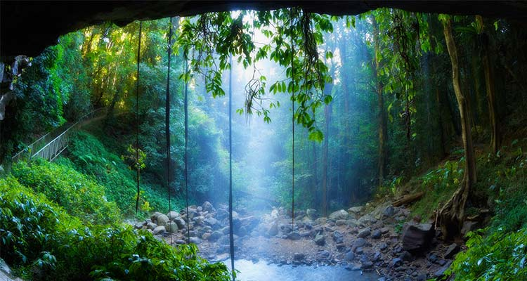
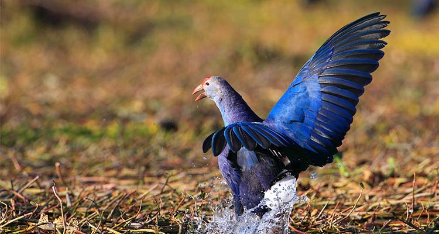
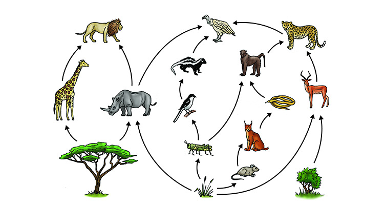

对于生物进化而言，生物多样性使这个星球上的生命得以持续。通过植物吸收二氧化碳这种温室气体，我们才得以呼吸空气。通过土壤、微生物和气象变化移除了水中的污物我们才得以喝到水。全部的物种——植物、动物、微生物，则组成了生命。然而，我们却威胁到了许多物种，而正是它们构成地球这个宏伟的不能代替的支持生命的系统，而一旦物种灭绝，那么想要再一次出现在地球上的话，是不可能的，也就是说，没有第二次机会。
但是，为什么？我们对此怀着深深的疑问。一些无名的物种真的有这么重要？假如这个世界上的物种减少到牛、羊、鸡、猪和足够的放在动物园的动物，难道我们就不能舒服的过日子了吗？为什么我们必须关注一些特种的鸽子或者是一种火蜥蜴或者是一种生活在遥远沼泽里的小小植物？它们灭绝了关我们什么事？毕竟，我们还有许多种别的鸽子和许多种别的蜥蜴，还有许多种植物留下来。
实际上，即使是一些物种灭绝了，还是有不少物种存留下来的。迄今为止，我们已经识别了175万个物种，但是科学家们认为，实际上地球上至少存在有1300万种物种。这是什么概念：只有不到13%的物种存活了下来。
重要的事情是所有的这些物种是与其它物种相互联系的，正如同我们依赖植物和动物为食一样。顺着食物链，我们也同样依赖我们吃的动物、植物的食物——又是一群植物、动物。如果其中一个特定的物种失去了它的栖息地或者不再找得到它常吃的食物，就会灭绝掉。整个食物网（不仅仅是食物链）就会破碎，而修补是一件很困难甚至是不可能的事。
当我们在生命之网中灭掉了一种物种，整个的网将变得摇摇欲坠。灭绝掉足够的物种就会撼动整个使生命在这个地球上变得可能的结构。最后，我们对生物多样性做的损害将最终损害我们自己。
1、亲戚多了不是坏事,对人如此,对其他生物也如此.；
2、保护生物,回头,也是保护我们人类自己。